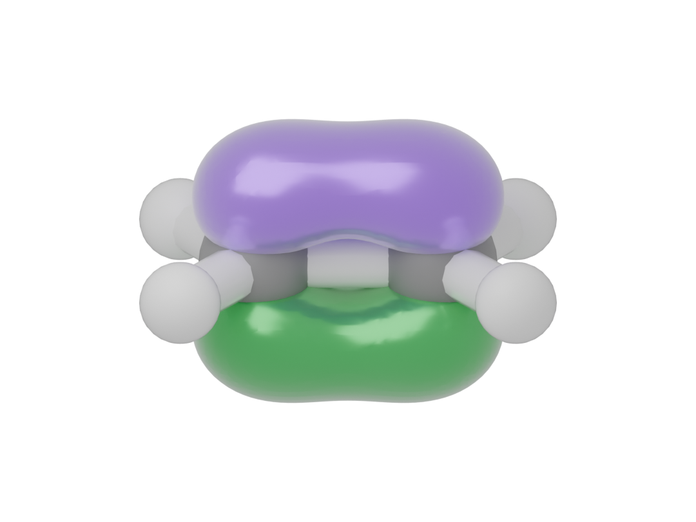
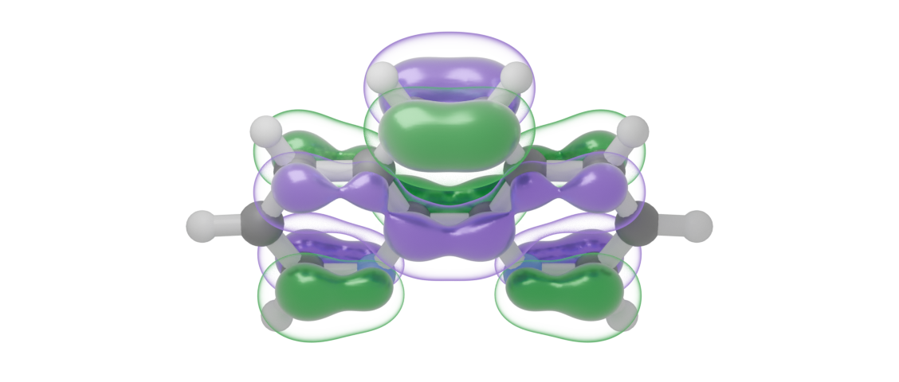

Quantum chemistry in Blender.
Turn your structures, orbitals, and trajectories into figures and animations with the Molecular Blender add-on.

EtheneHighest occupied π orbital
Render script
From calculation to figure
Bring in XYZ or SDF structures, Molden orbitals, or Cube grids. Use JSON to combine fields or build a sequence.

Explore a molecular orbital
Purple and green show the two signs of phenanthroline’s highest occupied molecular orbital. The translucent shells trace a lower absolute isovalue.
Try the bundled phenanthroline fileFollow a trajectory
Play a multi-frame XYZ file on Blender’s timeline. Here one ring rotates relative to the other. For a reaction, enable dynamic bonds to see bonds form and break.
Open the XYZ trajectoryInstall in Blender
Enable the add-on
- Download the Blender add-on ZIP and keep it zipped.
- In Blender 4.3, open Edit → Preferences → Add-ons. Open the top-right menu, choose Install from Disk…, and select the ZIP. In Blender 3.6, use Install….
- Enable Molecular Blender in the add-ons list.
Try your first orbital
- Download the water sample.
- Choose File → Import → Molecular Blender and select the sample. Set Field to Molecular orbital and Orbital to HOMO, then import.
- To add another orbital, select an atom, press N in the 3D Viewport, and open the Molecule tab.